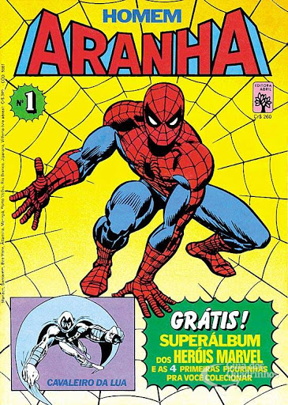
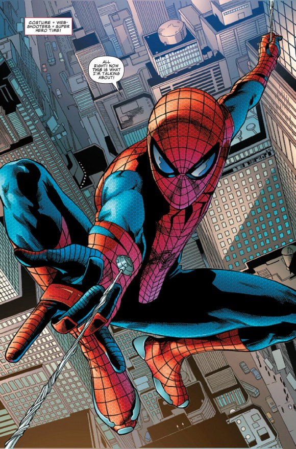
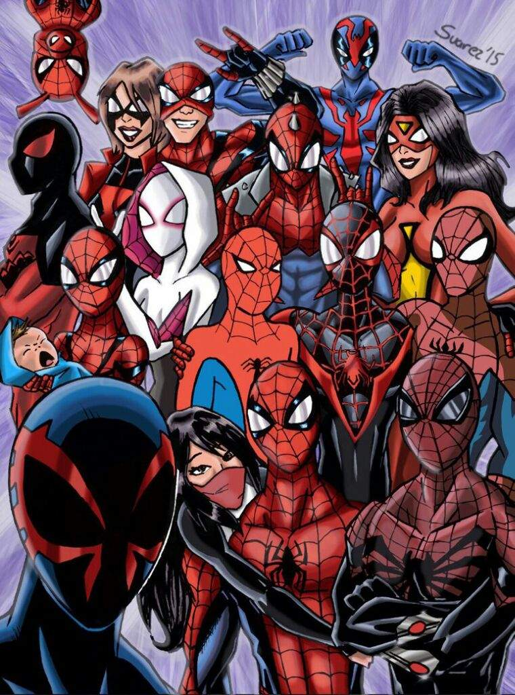
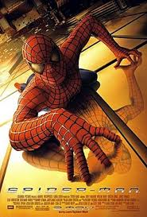

O Homem-Aranha (Spider-Man no original em inglês) alter-ego de Peter Parker, é um personagem fictício, um super-herói que aparece nas revistas em quadrinhos (banda desenhada em Portugal) americanas publicadas pela Marvel Comics, existindo no seu universo partilhado. O Homem-Aranha foi criado pelo editor/escritor Stan Lee e pelo escritor/artista Steve Ditko, e a sua primeira aparição foi no livro de antologia Amazing Fantasy #15 (Agosto de 1962), durante a Era de Prata da banda desenhada. Lee e Ditko conceberam o personagem como um órfão, que foi educado e criado pela sua Tia May e o seu Tio Ben em Nova Iorque, e, enquanto adolescente, tem de lidar com as lutas diárias normais da sua idade, em adição àquelas que tem como combatente do crime mascarado. Para combater os seus inimigos, os criadores deram-lhe super força e agilidade, a habilidade de conseguir aderir na maior parte das superfícies, a possibilidade de disparar teias de aranha através de mecanismos montados nos pulsos (inventados por ele próprio, a que ele chama "lança-teia" - "web-shooters") e consegue reagir precognitivamente ao perigo com o seu "sentido-aranha" ("spider-sense"). Os seus poderes foram adquiridos após ter sido mordido por uma aranha radioativa.
Quando o Homem-Aranha apareceu pela primeira vez, no inicio da década de 1960, os adolescentes nas revistas em quadrinhos de super-heróis eram habitualmente relegados para papeis secundários, como coadjuvantes do protagonista. A série Spider-Man abriu um novo território ao apresentar Peter Parker, o estudante por detrás da identidade secreta do Homem-Aranha, com as suas "auto-obsessões com a rejeição, inadaptações e solidão", algo com que os leitores mais jovens se podiam identificar. Apesar de ter todas as características de um coadjuvante, ao contrário de outros heróis adolescentes como Bucky e Robin, o Homem-Aranha não tem nenhum super-herói mentor, como o Capitão América e o Batman; ele teve que aprender sozinho que "com o grande poder vem sempre uma grande responsabilidade" — uma frase incluída no último painel da primeira história do Homem-Aranha,mais tarde atribuída retroativamente ao seu Tio Ben.
A Marvel fez aparecer o Homem-Aranha em várias séries de banda desenhada, a primeira das quais, e a mais longa, chamada The Amazing Spider-Man. Ao longo dos anos, Peter Parker desenvolveu-se de um rapaz do ensino médio tímido e lerdo para um conturbado estudante universitário, para um professor casado, e no final da década de 2000, um fotografo independente (freelancer), o seu papel adulto mais típico. Na década de 2010, junta-se aos Vingadores e ao Quarteto Fantástico, duas das equipes de super-heróis mais populares da Marvel.
Na história de 2012–2014, Peter Parker morre enquanto a sua mente está no corpo do seu inimigo Dr. Octopus; Octopus vive dentro do corpo de Parker, ficando com o papel de Homem-Aranha em The Superior Spider-Man, até regressar ao seu próprio corpo.Separadamente, a Marvel também publicou livros com versões alternativas do herói, incluindo Spider-Man 2099, que conta as aventuras de Miguel O'Hara, o Homem-Aranha do futuro; Ultimate Spider-Man, que conta as aventuras do adolescente Peter Parker num universo alternativo; e Ultimate Comics Spider-Man, que fala do jovem Miles Morales, que toma o manto do Homem-Aranha depois deste ter supostamente morrido em Ultimate.
O Homem-Aranha é um dos super-heróis mais populares e mais bem sucedidos comercialmente. Como o personagem símbolo e mascote da Marvel, já apareceu em inúmeras formas de mídia, incluindo em várias séries de televisão animadas e ao vivo, tiras de jornais sindicados, em jogos eletrônicos e numa série de filmes em que foi interpretado por Tobey Maguire (2002–2007), Andrew Garfield (2012–2014),e Tom Holland que tem o papel da personagem no Universo Cinematográfico da Marvel, começando em 2016 com Capitão América: Guerra Civil. Reeve Carney desempenhou o papel de Homem-Aranha no musical da Broadway, Spider-Man: Turn Off the Dark. O Homem-Aranha tem sido bem recebido como personagem de quadrinhos e como super-herói. Quase sempre reconhecido como a personagem topo da Marvel Comics, é geralmente classificado como um dos maiores personagens de quadrinhos em todos os tempos, juntamente com Superman e Batman, da DC Comics. A Empire colocou-o no quinto lugar na lista dos "50 Melhores Personagens de Sempre dos Quadrinhos", a Wizard colocou-o em terceiro numa lista feita para o seu website. Tal como a IGN no seu Top 100 dos "Melhores Heróis de Sempre dos Quadrinhos", atrás do Superman e do Batman.
Peter Parker sendo picado pela aranha em Amazing Fantasy #15. Arte de Steve Ditko.
Em Forest Hills, Queens, Nova York, o estudante de ensino médio, Peter Parker nascido em 10 de agosto de 1990, é um cientista orfão que vive com seu tio Ben e tia May. Conforme ilustrado em Amazing Fantasy #15, ele é mordido por uma aranha radioativa (erroneamente classificado como um inseto no painel) em uma exposição científica e "adquire a agilidade e a força proporcional de um aracnídeo" Junto com a super força, Parker ganha a capacidade de andar nas paredes e tetos. Através de sua habilidade nativa para a ciência, ele desenvolve um aparelho que o permitir lançar teias artificiais.
Inicialmente buscando capitalizar suas novas habilidades, Parker cria um traje e, como "Homem-Aranha", torna-se uma estrela de televisão. No entanto, "ele alegremente ignora a chance de parar um ladrão em fuga, e sua indiferença ironicamente o afeta, quando o mesmo criminoso mais tarde rouba e mata seu tio Ben". Homem-Aranha rastreia e prende o assassino; no painel seguinte da história está escrito: "Com grande poderes vêm grandes responsabilidades!".
Apesar dos seus super poderes, Parker luta para ajudar sua tia viúva a pagar aluguel, é provocado por seus colegas - particularmente a estrela de futebol, Flash Thompson - e, como Homem-Aranha, engendra a ira do editor de jornais, J. Jonah Jameson.Quando ele luta com seus inimigos inicialmente,Parker acha difícil fazer malabarismos entre sua vida pessoal e aventuras como Aranha.
Com o tempo, Peter se forma do ensino médio, e se matricula na Universidade de Empire State (uma instituição fictícia que evoca a Universidade da Columbia e a Universidade de Nova York), onde conhece o seu colega de quarto e melhor amigo, Harry Osborn, e sua namorada Gwen Stacy,e a tia May o apresenta Mary Jane Watson.Enquanto Peter lida com os problemas de drogas do Harry, após Norman Osborn ser revelado como inimigo do Homem-Aranha, o Duende Verde, Peter até tenta desistir de sua identidade fantasiada por um tempo. O pai de Gwen Stacy, capitão-detetive da Polícia de Nova Iorque, George Stacy, é morto acidentalmente durante uma batalha entre Homem-Aranha e Doutor Octopus (#90, novembro de 1970).
Peter Sanderson, historiador de quadrinhos.
Como observou um jornalista contemporâneo: "O Homem-Aranha tem um problema de identidade terrível, um complexo de inferioridade marcado e um medo das mulheres. Ele é anti-social, castrado, atormentado pela culpa edipiana e propenso a acidentes. .. um neurótico funcional". Agonizando sobre suas escolhas, sempre tentando fazer o que é certo, ele é, no entanto, visto com suspeita pelas autoridades, que parecem não ter certeza se ele é um vigilante útil ou um inteligente criminoso.
A mordida de uma aranha radioativa desencadeia mutações no corpo de Peter Parker, concedendo-lhe superpoderes. Nas histórias originais de Lee-Ditko, o Homem-Aranha tem a capacidade de se agarrar às paredes, força sobre-humana, um sexto sentido ( "senso aranha") que o alerta do perigo, equilíbrio perfeito, velocidade e agilidade sobre-humanas. O personagem foi originalmente concebido por Stan Lee e Steve Ditko como intelectualmente dotado, mas escritores posteriores descreveram seu intelecto em nível de gênio. Academicamente brilhante, Parker tem experiência nas áreas de ciências aplicadas, química, física, biologia, engenharia, matemática e mecânica.
Com seus talentos, costura sua própria fantasia para ocultar sua identidade, e constrói muitos dispositivos que complementam seus poderes, principalmente os atiradores mecânicos. Este mecanismo ejeta uma teia avançada, liberando o fluido da correia fotorreceptora em uma variedade de configurações, incluindo uma única corda para se balançar ou uma rede para enganar\amarrar seus inimigos, teia líquida para apagar fogo e um globo simples para atirar ou cegar um oponente. Ele também pode tecer a teia em diferentes formas como um escudo, uma proteção esférica, uma barreira hemisférica ou uma asa delta. Outros equipamentos incluem rastreadores-aranha, um farol de luz que pode ser usado como uma lanterna ou projetar o "sinal-aranha" e uma câmera especialmente modificada para tirar fotos automaticamente.
Dentro do Universo Marvel existe um multiverso com muitas variações de Homens-Aranha. Um personagem inicial incluído na década de 1980 é a paródia fictícia antropomórfica do Homem-Aranha em forma de porco chamada Spider-Ham (Peter Porker). Muitas versões de Homens-Aranha foram criadas como a versão futurista do Homem-Aranha na Marvel 2099, chamada Miguel O'Hara. Em Marvel Comics 2, Peter se casa com Mary Jane Watson e tem uma filha chamada Mayday Parker que carrega o legado de Homem-Aranha e Marvel Noir tem uma versão década de 1930 de Peter Parker.
Outras versões temáticas existem no início dos anos 2000, como uma versão Marvel Mangaverse e uma versão indiana do Homem-Aranha: Índia, chamada Pavitr Prabhakar.
Ultimate Homem-Aranha foi uma versão moderna e popular de Peter Parker. A versão de Parker mais tarde seria retratada como sendo morta e substituída por um Homem-Aranha afro-latino chamado Miles Morales.
O enredo "Spider-Verse" trouxe muitas versões alternativas do Homem-Aranha e introduziu muitos novos inspirados, como um mundo alternativo onde Gwen Stacy é mordida por uma aranha radioativa, juntamente com uma versão britânica chamada Brian Braddock da Captain Britain Corps.
Homem-Aranha no cinema
Adaptações do Homem-Aranha no cinema.
Homem-Aranha foi adaptado para desenhos animados, filmes, videogames, livros para colorir, romances, discos e livros infantis. Na televisão, estrelou pela primeira vez na série de animação da ABC, Spider-Man (1967-1970) e a série em live-action da CBS[desambiguação necessária], The Amazing Spider-Man (1978-1979), estrelada por Nicholas Hammond. também aparece no filme 3 Dev Adam, um filme turco, onde ele é representado como um vilão. Outras séries de animação com o super-herói incluem: Spider-Man (1981), Spider-Man and His Amazing Friends (1981-1983), Spider-Man: The Animated Series (1994-1998), Spider-Man Unlimited (1999- 2000), Spider-Man: The New Animated Series (2003), The Spectacular Spider-Man (2008-2009), entre outros. Uma nova série animada intitulada Ultimate Spider-Man, protagonizada por Drake Bell, estreou no Disney XD em 1 de abril de 2012.
Uma série tokusatsu com Homem-Aranha foi produzida por Toei e exibida no Japão. É encontrada geralmente por sua pronunciação japonesa "Supaidā-Man". Homem-Aranha também apareceu em outras formas de imprensa além dos quadrinhos, incluindo romances, livros infantis e as tiras de jornais diárias, The Amazing Spider-Man, que estreou em janeiro de 1977, com as primeiras parcelas escritas por Stan Lee e desenhadas por John Romita, Sr. Homem-Aranha foi adaptado para outros meios de comunicação, incluindo jogos, brinquedos, colecionáveis, e apareceu como o personagem principal em vários jogos eletrônicos em mais de 15 plataformas. Homem-Aranha também foi destaque em uma trilogia de filmes em live-action de Sam Raimi e estrelada por Tobey Maguire como o super-herói título.
O primeiro filme da trilogia, Homem-Aranha, foi lançado em 3 de maio de 2002; Sua sequência, Homem-Aranha 2 foi lançado em 30 de junho de 2004 e a sequência seguinte, Homem-Aranha 3, foi lançada em 4 de maio de 2007. Um quarto filme estava originalmente programado para ser lançado em 2011, mas a franquia foi reiniciada com novo diretor e elenco. A reinicialização, intitulada The Amazing Spider-Man, foi lançada em 3 de julho de 2012; dirigida por Marc Webb e estrelado por Andrew Garfield como o novo Homem-Aranha. Uma sequência intitulada The Amazing Spider-Man 2 foi lançada em 2 de maio de 2014.
Mais recentemente, a Sony e a Disney fizeram um acordo para o Homem-Aranha aparecer no Universo Cinematográfico Marvel. Tom Holland fez sua estréia como Homem-Aranha no filme do UCM de 2016, Capitão América: Guerra Civil, antes de estrelar seu próprio filme, Spider-Man: Homecoming em 2017, dirigido por Jon Watts, e também é confirmado oficialmente em Avengers: Infinity War que deve culminar todo o Universo Marvel, dirigido pelos Irmãos Russo, a estreia do novo filme aconteceu em 26 de abril 2018.
Um musical da Broadway, Spider-Man: Turn Off the Dark, começou as prévias em 14 de novembro de 2010 no Foxwoods Theatre da Broadway, com a noite de abertura oficial em 14 de junho de 2011 e ficou em cartaz até 4 de janeiro de 2014. As músicas e as letras foram escritas por Bono e The Edge do grupo de rock U2, com libreto de Julie Taymor, Glen Berger, Roberto Aguirre-Sacasa. Turn Off the Dark é atualmente o musical mais caro na história da Broadway, custando cerca de US $ 70 milhões. Além disso, os custos de funcionamento incomumente altos do musical foram relatados sendo $ 1.2 milhão aproximadamente por semana.